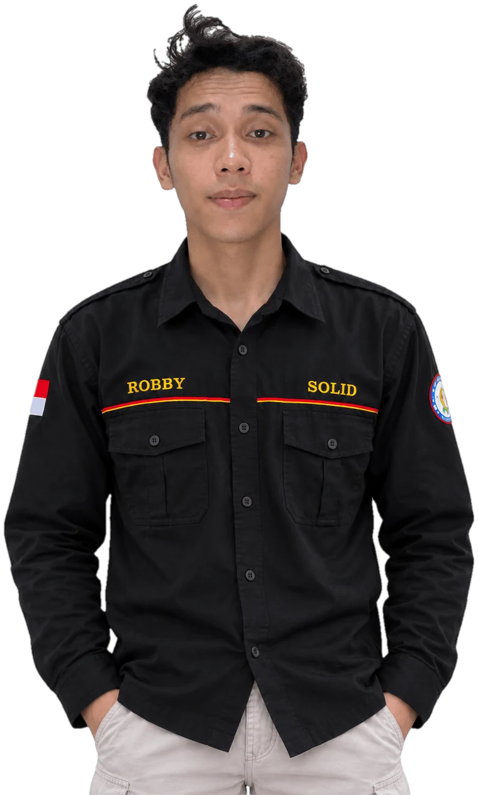

Website Portofolio
Website pribadi bergaya gelap yang memuat profil, pengalaman kerja, dan project. Dibuat manual dengan HTML dan CSS, lalu dipublikasikan lewat GitHub Pages.
- HTML
- CSS
- Git
- GitHub Pages
ROBBY CAHYADI

ABOUT ME
I combine a hardware background with a growing interest in software. As a graduate of the Diploma 3 (D3) program in Electronics Engineering with experience as a technician in electronics, audio-visual systems, networking, and coffee machines, I am used to troubleshooting systematically and understanding how devices work at the component level. I am now developing my web development skills (HTML, CSS, Git) to become a software engineere who understands systems from the hardware side all the way to the software.
Website pribadi bergaya gelap yang memuat profil, pengalaman kerja, dan project. Dibuat manual dengan HTML dan CSS, lalu dipublikasikan lewat GitHub Pages.
Repositori latihan untuk memahami alur kerja versi: commit, branch, merge, penyelesaian konflik, dan Pull Request.